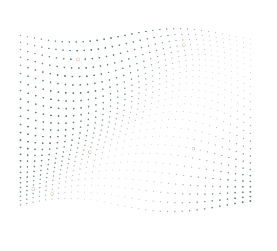

MIAMI
Rethinking how we
fill in the gaps.
Distribution-aware imputation that combines boosted-tree scoring with adversarial candidate selection, aiming to make missingness patterns less recoverable from completed data.
Machine learning researcher
I’m Jordi Corbalan Vilaplana. I develop machine learning methods for robust prediction, with a focus on incomplete data, model evaluation, and reliable AI.
From Barcelona. Currently studying at ETH Zürich.

A path through
research & practice
01 / Research
How can we make useful predictions when the data is incomplete? My research explores the methods, and the evaluation, behind that question.
MIAMI
Distribution-aware imputation that combines boosted-tree scoring with adversarial candidate selection, aiming to make missingness patterns less recoverable from completed data.
Knowledge distillation
Distilling established clinical risk calculators into models that work with missing inputs, with a focus on predictive fidelity, uncertainty, and interpretability.
Research at the Alexander G. Ioannidis Lab, supervised by Dr. Daniel Mas Montserrat and Prof. Alexander G. Ioannidis.
02 / Experience
Developing methods, testing assumptions, and translating scientific questions into working systems.
Explore selected projectsUndergraduate Researcher · Alexander G. Ioannidis Lab
Developing methods for incomplete tabular data and clinical knowledge distillation. Also working on biomarker-based phenotype and risk prediction using large-scale biobank data.
Project Management Data Science Intern
Designed and developed an automated resource-management system for Precision Medicine and Biosamples. Combined mathematical optimization and ETL pipelines to support resource planning across pharmaceutical R&D projects.
03 / Selected projects
Three approaches to an NP-hard problem: exhaustive search, greedy algorithms, and genetic algorithms.
A data warehouse for aviation performance, with a star schema for OLAP queries and rigorous data quality controls.
Supervised learning for healthcare data, addressing class imbalance with weighted ensembles and F1-score optimization.
Route generation combining GPS trajectories and graph theory to find paths to medieval monuments across Catalonia.
04 / A little background
I study Data Science and Engineering at UPC and Pharmacy at the University of Barcelona, bringing a quantitative and scientific perspective to my work.
B.S. Data Science and Engineering · Expected 2027
GPA: 8.92 / 10 · Course honors in machine learning, statistics, and distributed systems, among others.
Exchange student · Sep 2026 – Feb 2027
Master’s-level coursework in Probabilistic Artificial Intelligence, Causality, and Computational Neuroscience.
B.S. Pharmacy · In progress
Biostatistics, biochemistry, chemistry, and laboratory methods.
Full-tuition scholarship for academic excellence · 2026
Good research starts with a conversation.
For research, collaborations,
or an interesting question.